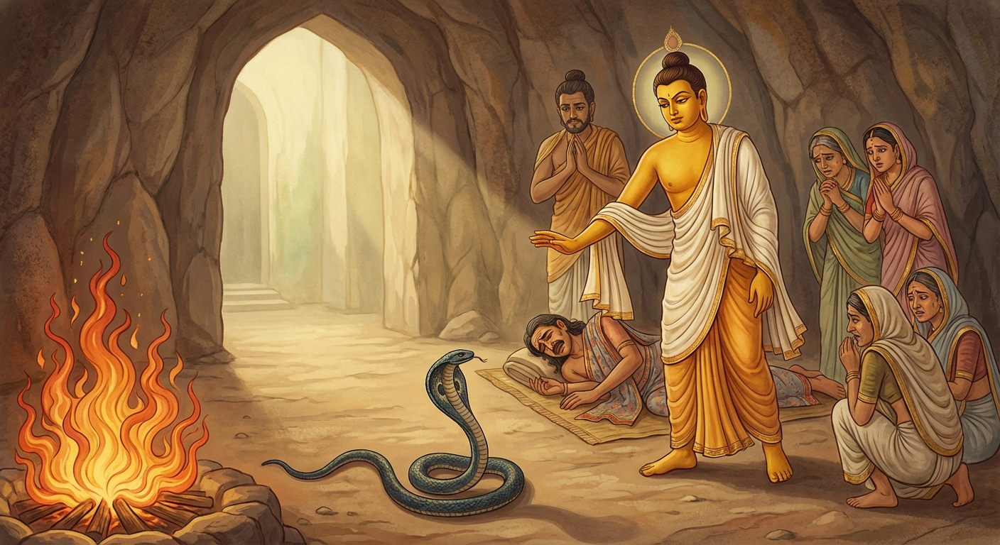

9. විසවන්ත ජාතකය (69)
“ධිරත්ථු තං විසං වන්තං” යන මේ ජාතක කතාව බුදුරජාණන් වහන්සේ ජේතවනාරාමයේ වැඩවසන සමයෙහි ධර්ම සේනාධිපති සැරියුත් තෙරුන් වහන්සේ අරබයා දේශනා කළ සේක.
එක් කාලයක සැරියුත් තෙරුන් වහන්සේ පිටිකැවිලි වළඳන සමයෙහි, මිනිස්සු භික්ෂු සංඝයා උදෙසා බොහෝ පිටිකැවිලි රැගෙන විහාරයට පැමිණියහ. මහා සංඝරත්නය පිළිගත් පසු බොහෝ කැවිලි ඉතිරි විය. මිනිස්සු, “ස්වාමීනි, ඇතුළු ගමට පිඬු සිඟා වැඩි භික්ෂූන් වහන්සේලා උදෙසා ද පිළිගන්නා සේක්වා” යි ඉල්ලා සිටියහ.
එම වේලාවෙහි තෙරුන් වහන්සේගේ සද්ධිවිහාරික ළාබාල භික්ෂුවක් ගම තුළ සිටියේය. උන්වහන්සේගේ කොටස ගෙන වෙන් කළ නමුත්, උන්වහන්සේ නොපැමිණි කල්හි “විසූකාලය (ඉර මුදුන් වීමේ වේලාව) ඉක්ම යන්නේය” යැයි සිතා එම කොටස තෙරුන් වහන්සේට ම පිළිගැන්වූහ. තෙරුන් වහන්සේ එය වැළඳූ පසු ළාබාල භික්ෂුව පැමිණියේය. එවිට තෙරුන් වහන්සේ, “ඇවැත්නි, අපි ඔබ සඳහා තැබූ කොටස වැළඳුවෙමු” යි පැවසූහ.
එවිට ළාබාල භික්ෂුව, “ස්වාමීනි, (පිටිකැවිලි) මිහිරි ය. කාට නම් මිහිරි දේ අප්රිය වේ ද?” යැයි පැවසීය.
එවදනින් මහා තෙරුන් වහන්සේට සංවේගය උපන්නේය. උන්වහන්සේ එතැන් පටන් “කිසි දිනෙක පිටි ආහාර වර්ග නො වළඳමි” යි ඉටා ගත්හ. එතැන් සිට සැරියුත් තෙරුන් වහන්සේ පිටිකැවිලි නොවැළඳූ බව සඳහන් වේ. උන්වහන්සේ පිටිකැවිලි නොවළඳන බව භික්ෂූන් අතර ප්රකට විය. භික්ෂූන් වහන්සේලා දම් සභාවෙහි මේ පිළිබඳව කතා කරමින් සිටියහ. බුදුරජාණන් වහන්සේ එතැනට වැඩම කර, “මහණෙනි, කවර කතාවකින් යුතුව දැන් රැස්ව සිටියහු දැ?” යි විමසා, එම පුවත දැනගත් කල්හි, “මහණෙනි, සැරියුත් තෙරුන් වහන්සේ එක් වරක් අත්හළ දෙයක්, ජීවිතය අත්හරින්නට සිදුවුව ද නැවත භාර නොගන්නාහ” යයි වදාරා මෙම අතීත කතාව ගෙනහැර දැක්වූ සේක.
අතීතයේ බරණැස් නුවර බ්රහ්මදත්ත රජු රාජ්ය කරන සමයෙහි බෝධිසත්වයන් වහන්සේ විෂ වෛද්ය කුලයක ඉපිද වෙදකමින් ජීවිකාව ගෙන ගියහ.
එකල සර්පයෙක් පිටිසර වැසියෙකුට දෂ්ට කළේය. ඔහුගේ ඥාතීහු පමා නොවී වහාම ඔහු වෛද්යවරයා වෙත රැගෙන ගියහ. වෛද්යවරයා, “මොහුට බෙහෙත් යොදා විෂ ඉවත් කරම් ද? නැතහොත් සපාකෑ සර්පයා ලවාම විෂ උරා ඉවත් කරවම් ද?” යි විමසූහ. ඥාතීහු “සර්පයා ගෙන්වා විෂ උරා ඉවත් කරවනු මැනවැ” යි කීහ.
වෛද්යවරයා සර්පයා ගෙන්වා, “මොහු දෂ්ට කරන ලද්දේ තා විසින් ද?” යි ඇසීය. සර්පයා “එසේය, මා විසිනි” යි පිළිතුරු දුන්නේය.
වෛද්යවරයා, “එසේ නම් තෝ ඩැහැගත් ස්ථානයට මුව තබා විෂ උරා ඉවත් කරව” යි නියෝග කළේය.
සර්පයා, “මා විසින් වරක් බැහැර කළ විෂ මම නැවත ආපසු නොගනිමි. මා හළ විෂ උරා නොගන්නෙමි” යි පැවසීය.
එවිට වෛද්යවරයා දර ගෙන්වා ගිනි දල්වා, “ඉදින් තෝ ස්වකීය විෂ ආපසු උරා නොගන්නේ නම්, මේ ගින්නට පැනපව” යි කීය.
සර්පයා, “මම ගින්නට හෝ පනිමි. එහෙත් වරක් මා විසින් වමනය කළ (බැහැර කළ) විෂ නැවත ආපසු නොගනිමි” යි පවසා මෙම ගාථාව ප්රකාශ කළේය.
“දිවි රැකගනු වස් - යම් විෂයක් මා වැමෑරුවේ ද,
ඒ වැමෑරූ විෂ - නැවත කෙසේ නම් ගනිම් ද?
දිවි රැකගනු විණ - ඊට වඩා මරු සොඳුරුය මට.”
“ජීවිතය රැකගනු පිණිස වුව ද, යම් විෂයක් මා විසින් වමනය කරන ලද්දේ ද, ඒ විෂ නැවත ශරීරයට ඇතුළු කරගැනීමට සිදුවන ජීවිතයට නින්දා වේවා!”
එහි අර්ථය මෙසේය: “ධිරත්ථු” යනු ගැරහීමේ අර්ථය දෙන නිපාතයකි. “තං විසං” යනු ජීවිතය රැකගැනීම සඳහා මා විසින් යම් විෂයක් වමනය කරන ලද්දේ ද, (එය නැවත ගැනීම නමැති) ඒ වමනය කළ විෂට නින්දා වේවා යන්නයි. “මතං මෙ ජීවිතා වරං” යනු ඒ විෂ නැවත වමනය (උරා) නොගැනීම නිසා ගින්නට පැන මියයන්නට සිදුවේ නම්, ඒ මරණය (මෙසේ ලාමක ලෙස) ජීවත් වීමට වඩා මට උතුම්ය යන්නයි.
මෙසේ පැවසූ සර්පයා ගින්නට පැනීමට සැරසුණේය. එකෙනෙහිම වෛද්යවරයා සර්පයා වළක්වා, දෂ්ට කිරීමට ලක් වූ පුරුෂයා ඖෂධ සහ මන්ත්ර මගින් විෂ හරණය කොට සුවපත් කළේය. පසුව සර්පයාට සිල් දී, “මෙතැන් පටන් කිසිවෙකුට හිංසා පීඩා නොකරව” යි අවවාද කොට නිදහස් කළේය.

බුදුරජාණන් වහන්සේ, “මහණෙනි, සැරියුත් තෙරණුවෝ වරක් අත්හළ දෙයක් ජීවිතය රැකගැනීම උදෙසා වුව ද නැවත භාර නොගන්නාහ” යි වදාරා, මෙම ධර්ම දේශනාව ගෙනහැර දක්වා පූර්වාපර සන්ධි ගළපා ජාතකය සමාප්ත කළ සේක.
“එකල සර්පයා වූයේ මේ සැරියුත් තෙරුන් වහන්සේ ය. විෂ වෛද්යවරයා වූයේ ලොව්තුරු බුදු වූ මම ම වෙමි.”
විසවන්ත ජාතක වර්ණනාව නවවැනියි.